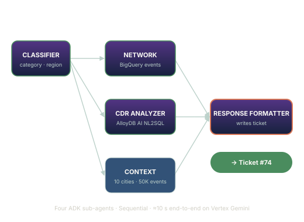

Phase 12 — Vertex model-ladder failover
Region failover swapped for a 3-attempt model ladder at the
global Vertex endpoint, with escalating timeouts and a
GA fallback that has its own quota bucket.
NetPulse AI watches Indonesian telecom networks and turns a customer complaint into a structured incident ticket in under 15 seconds. Built on Google ADK, AlloyDB AI, and Vertex Gemini for the APAC GenAI Academy 2026.
Pick a complaint, watch four ADK sub-agents handle it — classifier, network investigator, CDR analyzer, response formatter — and see the ticket land with a customer-impact rollup and a NOC action playbook.
Run a demo →
Region failover swapped for a 3-attempt model ladder at the
global Vertex endpoint, with escalating timeouts and a
GA fallback that has its own quota bucket.
Hand-written CDR SQL replaced by AlloyDB AI Natural Language. The CDR analyzer now poses one English question; AlloyDB AI translates, executes, and returns rows under a read-only role.
Read the post →NetPulse AI was selected into the Top 100 of the APAC GenAI Academy 2026 (#82). Refined prototype submitted ahead of the April 30 Top-10 cut.
Read the story →NetPulse AI is built to give Indonesian network operators a single pane of glass — from raw customer complaint to actionable NOC ticket — in seconds, not hours.